I am a junior at Brandeis University pursuing a double major in Computer Science
and Business. With a passion for coding, entrepreneurship, and leadership, I am driven to create
innovative solutions that bridge the worlds of technology and business. My professional interests
span software engineering, data science, management consulting, and finance, reflecting a deep
curiosity about how technology can transform industries and improve the investment experience. I am
actively involved in leadership roles and community initiatives, ranging from serving as class
chair, customer advocacy, and more. Through my academic pursuits and professional endeavors, I aim
to merge technical expertise with strategic business insight to drive impactful, positive change.
Experience
Information and Borrowing Assistant
Brandeis University Library
Deliver seamless library experiences by empowering patrons with efficient checkouts and
friendly service. Ensure proactive management of online resources, maintaining accuracy and
relevance in a rapidly evolving digital landscape. Optimize organization by streamlining
materials, fostering accessibility, and sustaining order. Utilize detailed record-keeping
systems to drive operational excellence and enhance the library's resource tracking
capabilities.
August 2024 - Present
Orientation Leader
Brandeis University Department of Orientation and First Year
Experience
Spearheaded impactful orientation initiatives, including move-in programs and campus tours,
to create a welcoming environment. Facilitated workshops, activities, and bonding events
that seamlessly integrated students into university life and culture. Leveraged adaptability
and swift decision-making to ensure a consistently positive orientation experience.
Collaborated with a diverse team of leaders to execute events that foster connection and
engagement.
August 2023 - January 2025
Lead Teaching Assistant: Software Entrepreneurship
Brandeis University Department of Computer Science
Developed and designed a course website to effectively showcase assignments and resources for
students. Guided student groups through classwork and the entrepreneurial process, fostering
engagement and understanding. Evaluated assignments with detailed feedback aligned with
course objectives. Collaborated with a team of teaching assistants to streamline
communication between students and the professor.
August 2024 - December 2024
Guest Advocate
Target Corporation
Provided outstanding service by engaging guests at registers, self-checkout, and service
areas to enhance their experience. Ensured exceptional quality through clear communication
and effective problem-solving to meet guest expectations. Maintained cleanliness and upheld
product safety standards while efficiently bagging items to align with company policies.
The goal of this project was to introduce the fundamentals of Computer-Aided Design (CAD) and
Computer-Aided Manufacturing (CAM) through hands-on experience with a Prusa MINI+ 3D Printer
and PrusaSlicer software. The project was divided into three parts:
Creating and printing a customized nameag using PrusaSlicer
Printing a second, more challenging test print (a torture test) to explore the limits of
3D printing.
Documenting the process on a personal website to reflect on the learning experience.
By completing this project, I gained the ability to slice and print 3D models, understand the
technical constraints of additive manufacturing, and improve troubleshooting
techniques for common 3D printing issues.
Part 1: Nametag Design and Printing
Second NametagFirst Nametag
Process
Downloading and Editing the Nametag File
I accessed the provided nametag .3mf file from the course repository.
Using PrusaSlicer, I modified the text and layout to personalize my nametag.
Configuring PrusaSlicer Settings
Printer: Prusa MINI+ with a 0.4mm nozzle
Layer height: 0.2mm
Infill: 15% grid pattern
Supports: None(since the design did not require overhang support)
Starting the Print
I loaded PLA filament and heated the nozzle and print bed accordingly.
After slicing the model, I exported the G-code to a USB and started the print.
During this process, I encountered an issue where filament got stuck in the extruder
tube. With the help of Ben and Ian, I was able to clear the blockage and restart
the print successfully.
Observations and Adjustments
First nametag: The print was clean and legible
Second nametag: The text was less distinct, likely due to the font size being too
small and a lack of contrast between the layers (since I did not change the
filament color for the top layer).
Future imporvments: I should increase the font size and consider pausing the
print to change filament colors for better readability.
The file was available in both .3mf and .stl formats, allowing comparison of
metadata retention.
Slicing and Printing
I imported the .3mf file into PrusaSlicer and reviewed the structure.
Initially, I considered adding supports, but I was advised against it, as the test is
designed to push the printer’s overhang and bridging capabilities.
After slicing, I exported the G-code to a USB and started the print.
Observations and Analysis
The torture test features overhangs, bridges, and acute angles to evaluate the
printer’s performance.
The print successfully completed, with only minor stringing in the bridging
sections.
Future improvements: Adjusting the retraction settings and increasing the
cooling fan speed could reduce stringing.
I customized the website structure, adding an ENGR 11A tab for project
documentation.
Website Hosting Challenges
Initially, I attempted to register cameron-sherman.com through GoDaddy,
but encountered domain management and SSL certificate issues.
I later transferred my domain to NameCheap, which provided a smoother setup
process.
Final Touches
I uploaded images of my nametag and torture test prints.
My reflection included insights into successes, challenges, and improvements for
future prints.
Reflection & Future Improvements
Observations
Importance of Proper Slicing Settings
The nametag text size affected readability, and the lack of contrast reduced
visibility.
The torture test revealed minor stringing, indicating the need for improved
retraction settings.
Understanding Printer Limitations
The Prusa MINI+ handled overhangs well but had slight issues with bridges.
The lack of color contrast in my nametag print highlighted the importance of
filament changes.
Website Development and Hosting
I successfully documented my work on GitHub Pages, reinforcing my website
deployment skills.
Overcoming domain hosting issues improved my understanding of SSL certificates
and DNS management.
Conclusion
Summary
Hands-On Learning
This project provided hands-on experience with CAD, CAM, 3D printing, and website
development.
I gained valuable insight into printing parameters, troubleshooting, and
technical limitations.
Future Applications
I will apply these lessons to create more refined and functional 3D prints.
Exploring advanced PrusaSlicer settings will help optimize print quality.
Design Project #2: Remixing 3D Designs
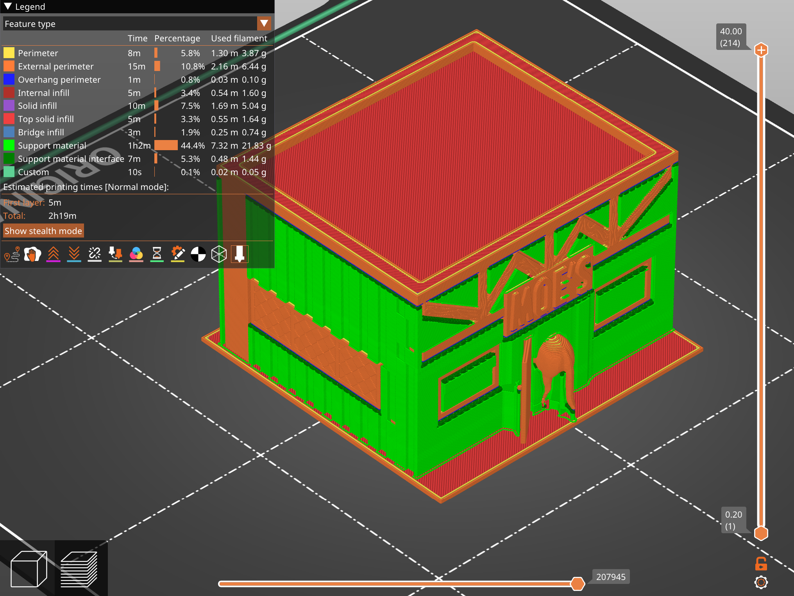
A Horse Walks into a Bar: in PrusaSlicer
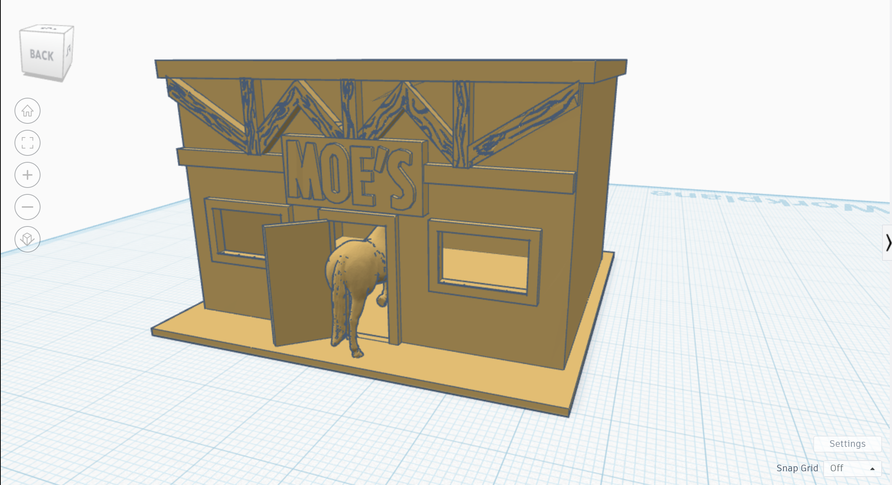
A Horse Walks into a Bar: in TinkerCad
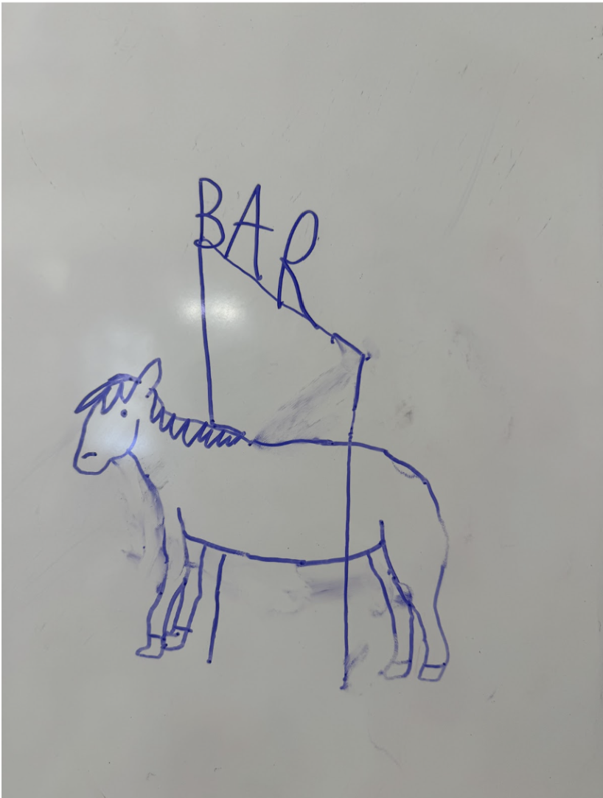
A Horse Walks into a Bar: a sketch A Horse Walks into a Bar: a print
Objective
The goal of Project #2 was to remix existing 3D models by combining elements from different designs,
modifying them using 3D modeling software, and printing the final models. This project was divided
into two parts: using TinkerCad for remixing and using Fusion360 for more advanced modifications.
The objective was to explore 3D modeling, enhance design skills, and gain hands-on experience with
3D printing processes.
Part 1: TinkerCad Remixing
Concept & Design Process
For the first part of this project, I decided to recreate a visual representation of my favorite
joke “A horse walks into a bar. The bartender says, ‘Why the long face?'” To bring this
concept to life, I planned to combine a horse model with a bar model using TinkerCad. I initially
sketched out my design, but I found that my proportions were off because I started with
the horse rather than defining the 3D environment first. To streamline the process, I opted to
download an .stl file of Moe’s Tavern from The Simpsons as my bar model, which allowed me to
focus on placing the horse correctly within the scene.
TinkerCad Modeling Process
Importing .stl Files: I sourced a 3D horse model and a Moe’s Tavern model from
Thingiverse and imported them into TinkerCad.
Alignment & Scaling: Initially, I had difficulty positioning the horse inside the tavern
because my snap grid was set to 1mm. After turning the snap grid off, I gained finer control
over object placement.
Modifications: To ensure a proper fit, I adjusted the scale of the horse and tweaked the
dimensions of the tavern’s doorway. I also removed unnecessary walls and adjusted the model’s
orientation for printing efficiency.
Grouping & Exporting: Once I finalized the positioning, I grouped the elements in
TinkerCad and exported the final .stl file.
3D Printing Process
Importing to PrusaSlicer: I imported the .stl file into PrusaSlicer and adjusted the
scale slightly to fit within the printer’s build volume.
Support Structures: Since the design had overhanging parts, I added support structures to
ensure the print’s structural integrity.
Printing: I initiated the print and monitored the process for any errors or warping.
Post-Processing: After printing, I removed the supports carefully. However, I noticed
some rough edges where the supports had been attached. More precise removal tools or finer
support settings in PrusaSlicer could have improved the post-processing quality.
Resluts and Observations
The final print successfully represented the joke, with the horse positioned within the bar. The
overall print quality was satisfactory, though I could have optimized the support removal process to
reduce imperfections. Additionally, adjusting the model’s orientation before slicing could have
improved print efficiency and reduced filament waste.
Part 2: Remixing with Fusion360
PokeBall Top in Fusion360
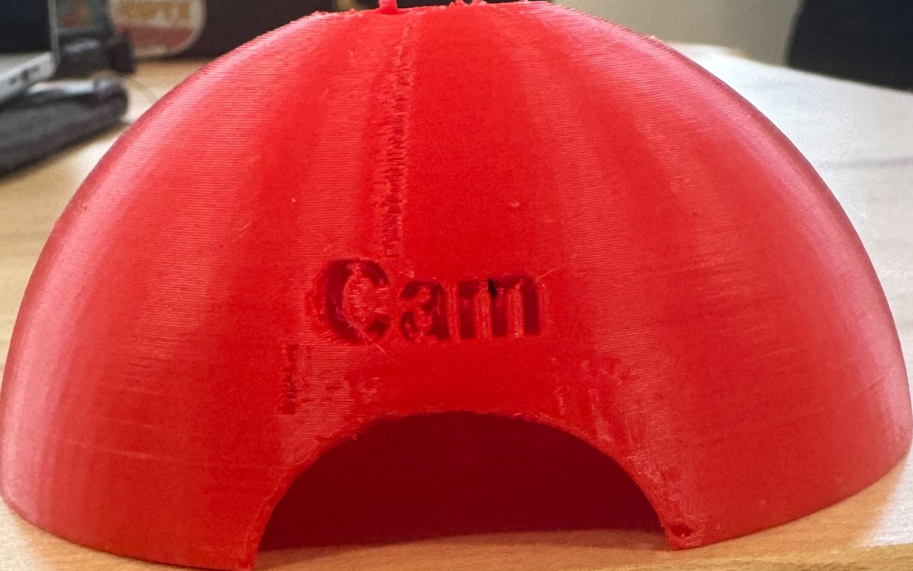
PokeBall Top after Print
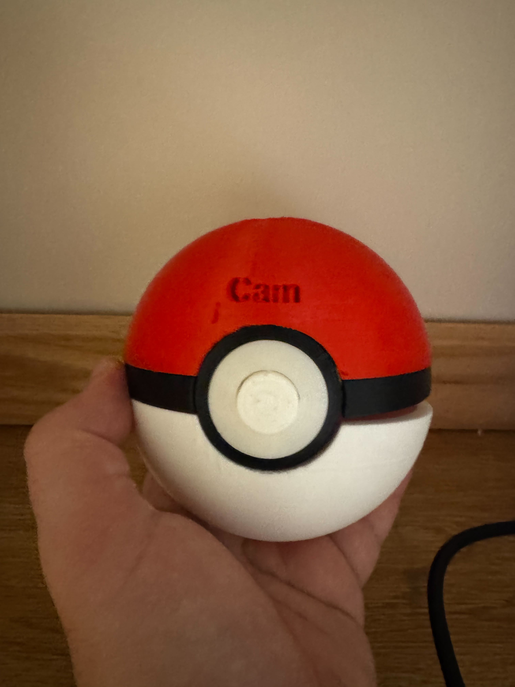
Finished PokeBall (Closed)
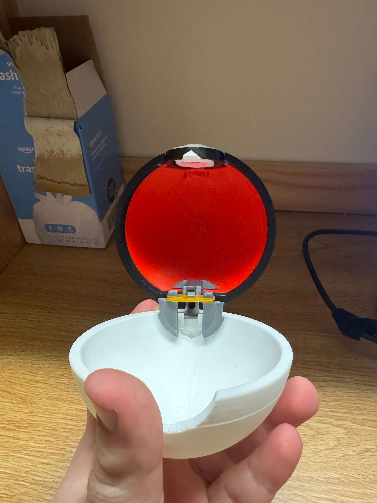
Finished PokeBall (Open)
Concept & Design Process
For the second part of the project, I decided to create a functional, auto-opening PokéBall. I found
inspiration from a
Reddit post that had a similar design and chose to personalize it by adding my nickname,
"Cam," to the top half of the PokéBall.
Fusion360 Modeling Process
Importing .stl Files: I downloaded the PokéBall model components from the aformentioned
tutorial.
Design Adjustments: Initially, I attempted to assemble multiple components in Fusion360
but faced difficulties in merging them effectively. Based on advice from Ben and Ian, I shifted
my approach to modifying a single component rather than assembling multiple parts.
Mesh Conversion: To engrave my name into the top of the PokéBall, I first had to convert
the imported mesh into a solid body.
Adding the Name: Using Fusion360’s text tool and following an online tutorial, I debossed
my nickname "Cam" into the surface of the top half of the PokéBall. While I originally
considered an embossed design, I found the debossed look more aesthetically pleasing and easier
to print.
Exporting: After finalizing the modifications, I exported the modified .stl file for
printing.
3D Printing Process
Importing to PrusaSlicer: I imported the modeified .stl file into PrusaSlicer and added
supports for the overhanging sections.
Printing the Top Half: The print quality was good overall, but the very top of the
PokéBall's hemisphere did not print completely. Thankfully, this issue was minimal and did not
impact the functionality of the PokéBall.
Printing the Other Components: I proceeded to print the remaining components and followed
the assembly steps outlined in the tutorial.
Resluts and Observations
The final product was a fully functional PokéBall that opens and closes with a button press. The
debossed name on the top half turned out well, adding a unique, personal touch to the design. The
minor issue with the top hemisphere could have been avoided by slightly increasing the infill
percentage or adjusting the print orientation.
Design Project #3: Form and Fit for Electronics
The Lightning McQueen Chassis Enclosure Series
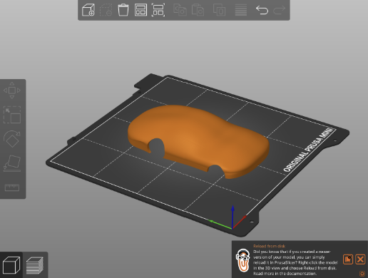
To begin the design process for the chassis enclosure, my partner,
Vivian, and I brainstormed potential concepts. Vivian proposed a race car theme, which I
refined to model the enclosure after Lightning McQueen from Pixar’s Cars franchise.
Given the complexity of modeling in Fusion360, I initiated the modeling process on
February 13 to allow lots of time for refinement. Initially, I followed a tutorial to guide the
modeling process. The first step, which involved adding reference canvases in Fusion360,
was beneficial. However, the remainder of the tutorial proved ineffective, as the
resulting model failed to print correctly when converted to .3mf or .stl format. When
sliced in PrusaSlicer, only support structures were generated, indicating an issue with
model thickness. Attempts to add thickness resulted in the error message: “The operation
could not create a valid result. Try adjusting the values or changing the input
geometry.” The model’s geometry was too complex to modify effectively, necessitating a
complete restart. After further research, I located another tutorial that utilized the
Chevrolet Corvette C6 orthographic diagrams as reference canvases; the same car model
that inspired Lightning McQueen’s design. Following this tutorial, I successfully
progressed through the initial steps until approximately the twelve-and-a-half-minute
mark. At this stage, I encountered difficulties in creating accurate wheel holes due to
differences in geometry between the tutorial model and my own. To address this
challenge, I employed extruded cylinders to form the wheel holes, which proved to be an
effective solution. After successfully incorporating this adjustment, I was able to
extend the thickness of the car model without errors. The final model was successfully
generated and appears as shown in the following image. I saved the .stl file and
exported it to TinkerCad, where I could make more simple extrusions for the window
shield, and McQueen’s signature number ‘95’ on each side of the car. Then, I exported
the .stl file to PrusaSlicer to scale it based on the measurements done in class and was
about to slice it to make supports...
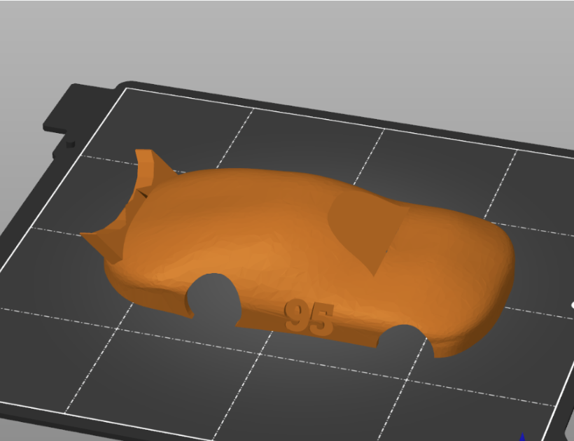
Upon further evaluation, Vivian and I identified several design
issues with the chassis enclosure. The enclosure obstructed access to the battery
compartment and power button, and the car’s spoiler contained unnecessary geometry.
However, we determined that these issues could be effectively addressed through
additional modifications. To implement these adjustments, we utilized TinkerCad to
create targeted extrusions. First, we modified the front window by converting it into a
complete extrusion, allowing users to access and remove the batteries. Next, we added a
rotated cube extrusion at the rear of the car to provide access to the power button.
Finally, we introduced a cylindrical extrusion to eliminate the unnecessary geometry in
the spoiler. These modifications successfully resolved the identified issues while
maintaining the integrity of the overall design.
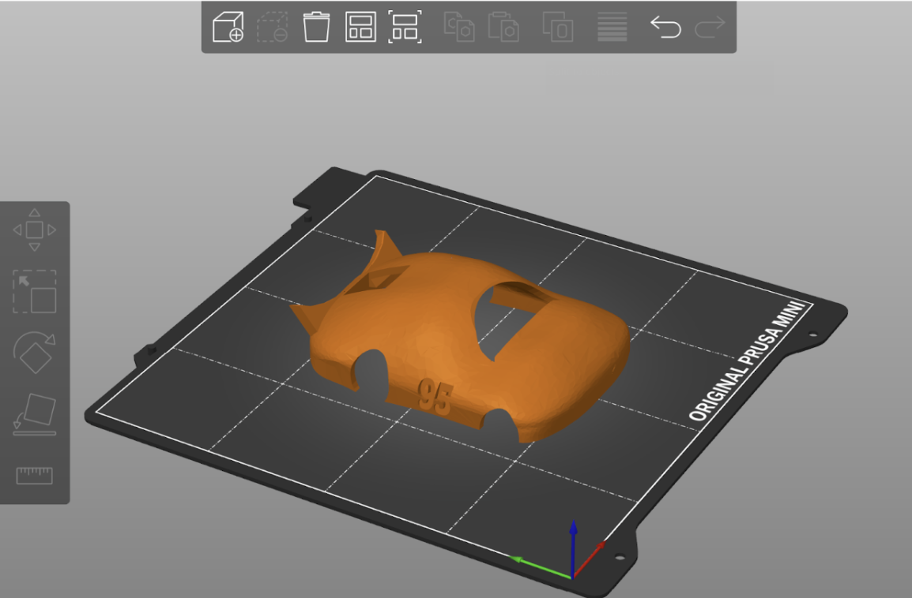
After measuring the chassis’ dimensions, we scaled our new enclosure
to match it, with an additional 2mm as leeway, and then we began our print.
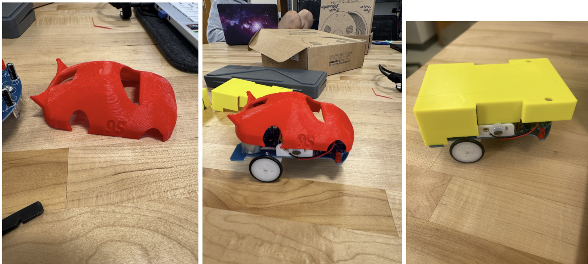
The red model represents the initial print outcome. While it provided
a solid starting point, it was not the correct size. The model was too short and lacked
sufficient width, and the wheel holes did not extend over the body of the car as
intended. To address these issues, Vivian and I adjusted the model’s dimensions based on
the tailored box (yellow) we had created. We increased the model’s length and width by a
few millimeters, ensuring that it was wider and slightly shorter than the yellow box.
However, modifying the height presented a challenge, as any adjustments risked
distorting the proportions of the wheel-hole overhangs.
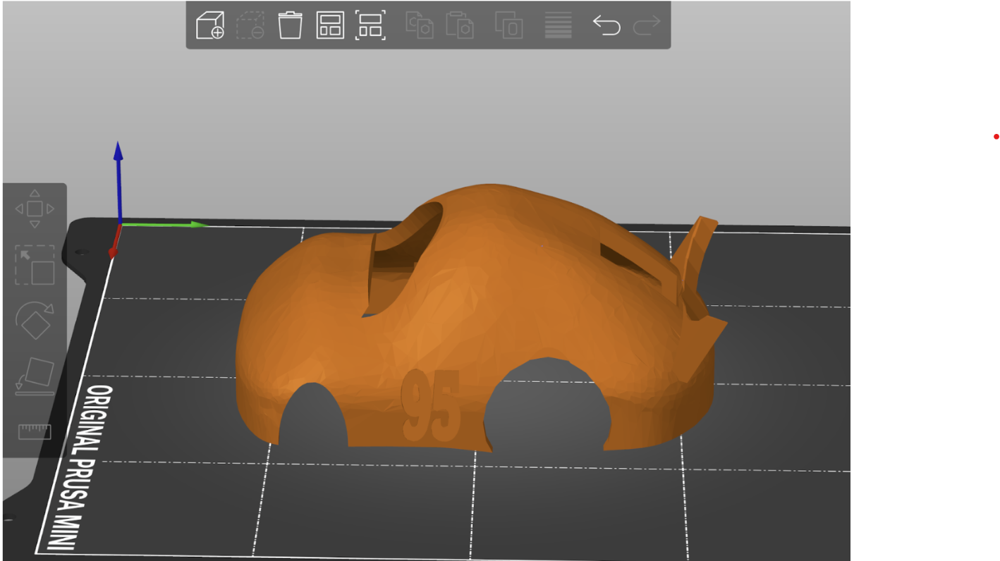
After several iterations and careful adjustments, Vivian and I
decided to scale the height of the model and incorporate cylindrical extrusions using
TinkerCad. Initially, the design appeared unrefined due to an overhanging section of
excess material. To address this issue, we added a 2mm-wide semicircle to each
overhanging section, effectively minimizing its visibility. Satisfied with the revised
design, we proceeded with the standard preparation process. We inverted the model,
generated the necessary support structures, and initiated the second iteration of the
Lightning McQueen print.
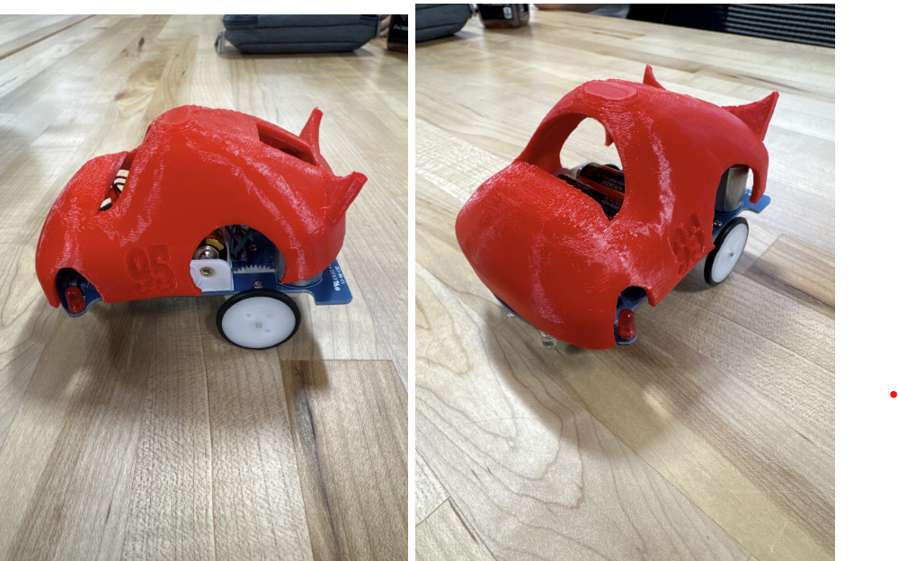
While the width and height of the second print were accurate, the
length fell slightly short of the intended dimensions. Upon further analysis, we
determined that the printed model’s actual length was shorter than the dimensions
specified in the computer model. This discrepancy was likely due to the endpoints being
positioned at the spoiler. To correct this issue, we established a new target length
based on precise measurements. Using a digital caliper, we measured the actual length of
the tailored box (109.71 mm), the intended input length for the second print (108.54
mm), and the actual length of the second print (106.48 mm). We then calculated the
adjusted input length using the following equation: New Input Length=109.71 mm+108.54
mm−106.48 mm=111.77 mm This revised length was used as the new input dimension for the
next iteration of the print.
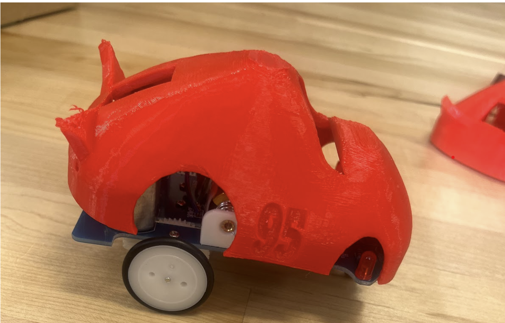
The third print somewhat successfully addressed the length
discrepancy, aligning with the intended dimensions for width and height, and while not
perfect regarding length, it could still fit well enough for the chassis to function.
The model’s width and height remained consistent with the tailored box, and the wheel
holes extended over the body of the car as intended. The revised design partially
resolved the initial issues, resulting in a mostly functional and aesthetically pleasing
chassis enclosure. This outcome demonstrates the importance of precise measurements and
iterative adjustments in the design process.
The Laser Cut House Chassis Enclosure Series
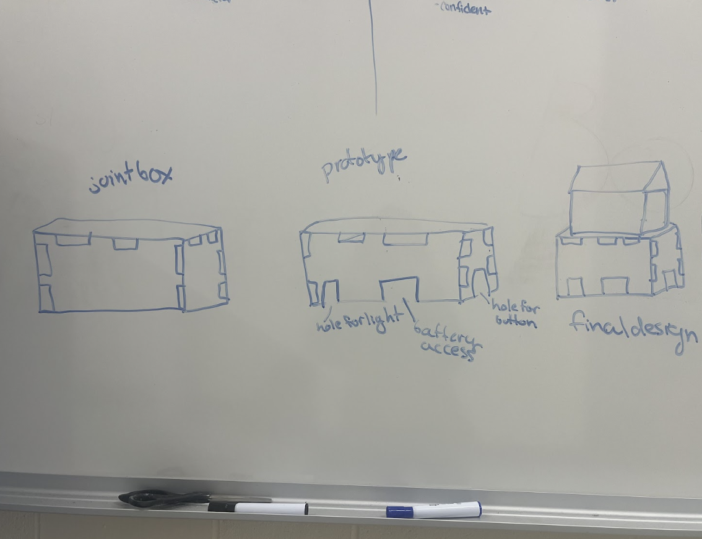
Just like Vivian and I did with the 3D printed chassis enclosure, we
began making our laser-cut chassis enclosure by brainstorming ideas for what we would
make. After some thought, we settled on designing a mobile house. We sketched out
how we would design it, agreeing on by making a wooden box reminiscent of the one in the
tutorial, then adding two triangles to serve as a way to hang the roof panels, and, of
course, two roof panels.
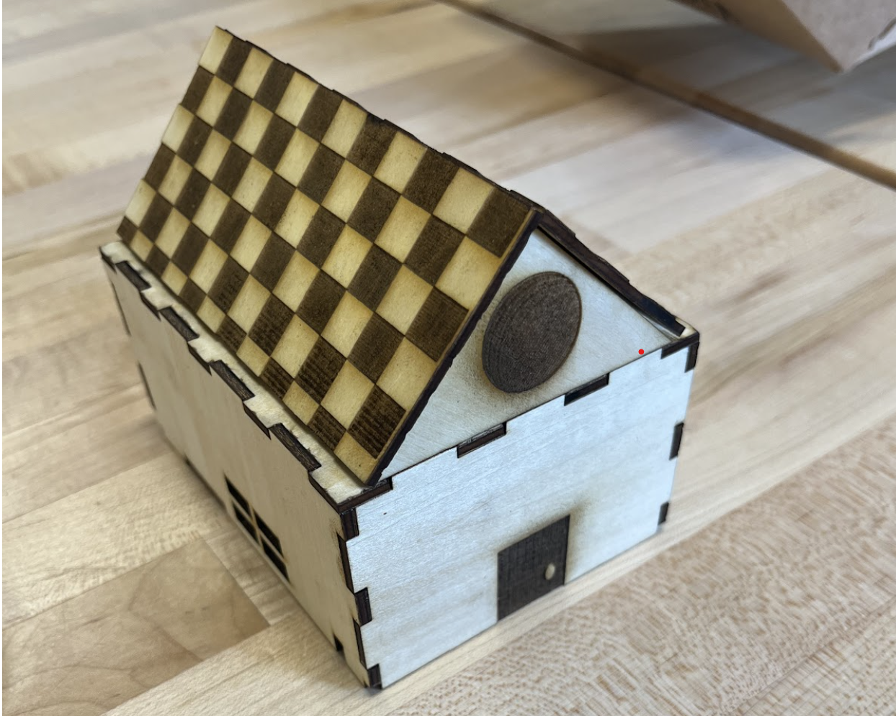
Our first laser cut (not pictured) was supposed to look like this,
but when we tried to scale in Fusion360 to match the chassis’ perimiter, it messed up
the scale of the connecting joints and holes, so we could not connect it. To fix this,
we decided to remake the chassis box in Fusion360, except this time, instead of directly
following the tutorial's measurements, we would use our measurements of the chassis.
This method proved to be effective, as our new box could now be properly assembled.
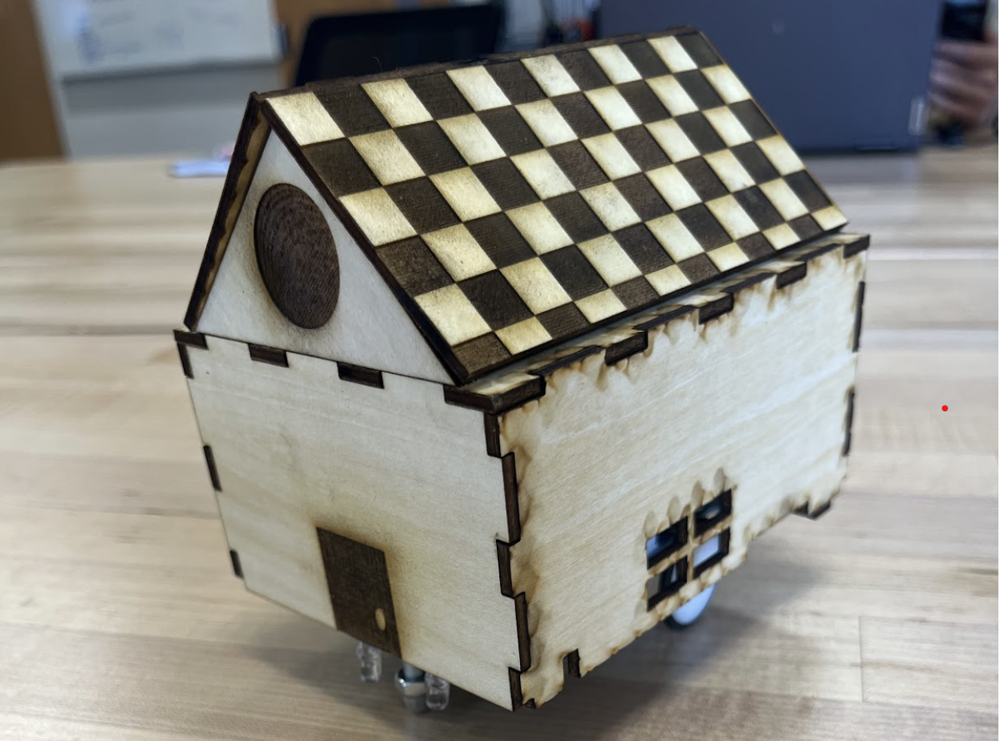
We only had one minor problem remaining, that problem being the fact
that our roof panels were too long. We concluded that the best way to fix this would be
to make a line in LightBurn to cut the unneded 'tiles'. After the cut, we were able to
successfully assemble the full house and put it onto the chassis (pictured).